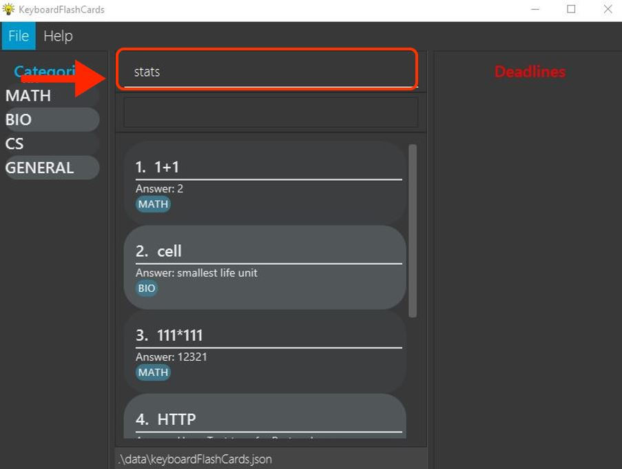
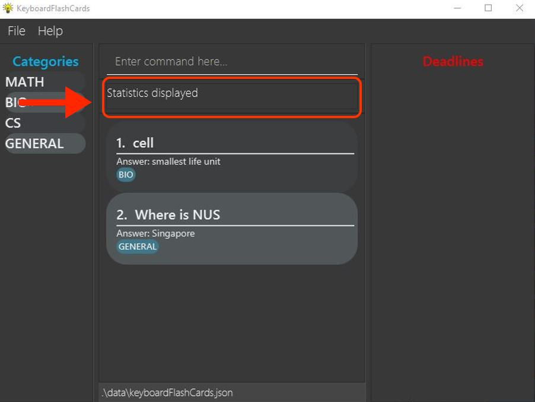
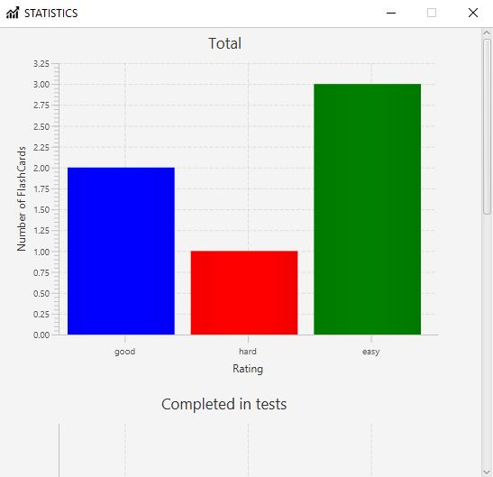
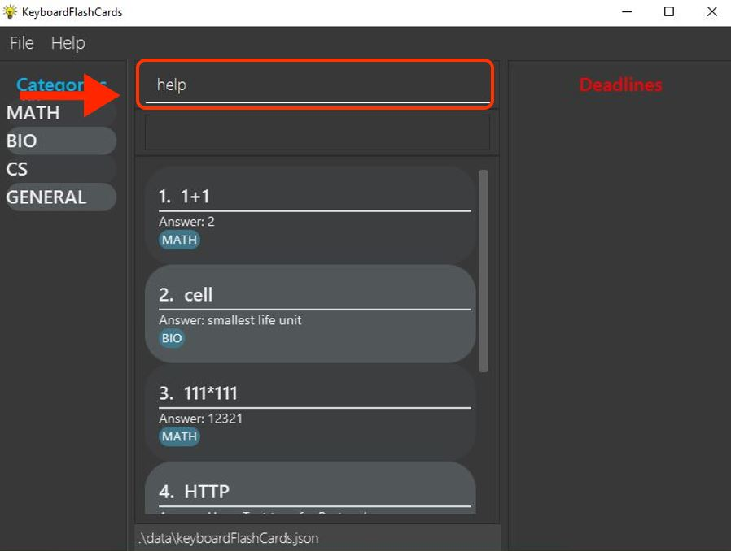
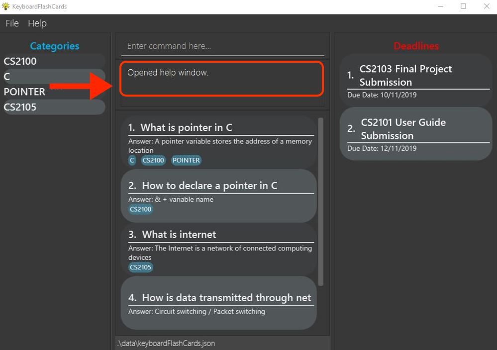
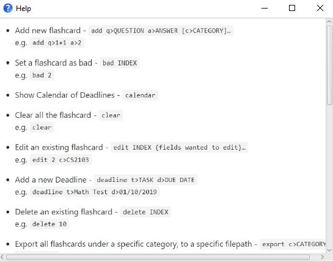

About the project
This project was part of an assignment for a second year software engineering module (2103T) offered by the National University of Singapore (NUS). The assignment required my team which consists of 5 members to morph an Address Book application (which manages contact information of people) to suit our newly identified users, within a period of 6 weeks.
The target user group that we have selected are software engineering students like ourselves, who are more familiar and prefer to use a Command Line. As students, we take multiple modules each semester and in doing so, it can be difficult to organize notes for revision. Thus, we decided to provide a single platform for software engineering students to organize their learning resources into flashcards with each flashcard consisting of a question, an answer, and a rating.
This is what the Graphical User Interface (GUI) of our application looks like.

My role in the team was to design and write the codes for the statistics and help features which uses the commands stats and help respectively. I will go into more detail about my contributions to the project in the following sections.
Note the formatting used in this document
-
Commands are highlighted:
help -
Class and objects are highlighted with italic font:
class
Summary of contributions
-
Major enhancement: Added a statistics feature.
-
What it does: It allows the user to view three different types of statistics in a single pop-up window. The statistics are displayed in the form of two bar charts and a line chart. The first bar chart shows the number of FlashCards that are rated as good, hard and easy. The second bar chart shows the number of FlashCards (good, hard and easy) that are completed during the test mode. Lastly, the line chart shows the performance of the user, displayed in percentage format. The performance takes into consideration the ratings of the FlashCards. If there are greater number of FlashCards rated as good or easy, the performance shown will be higher.
-
Justification: This feature improves the product significantly because a user would not have to painstakingly keep track of the number of FlashCards that have ratings. The user can also identify if his/her knowledge has improved after each test, which is a good indication of exam readiness.
-
Highlights: This enhancement required a synchronisation between the test mode and the statistics feature itself. The test mode was completed by another one of my team members. This made it harder to integrate my feature since it required an in-depth understanding of how the test mode works. This also required me to add codes within the framework of the test mode feature.
-
-
Minor enhancement: Modified the exisiting help feature.
-
What it does: It displays a full list of commands that are supported by our application, instead of providing a url to the user that directs him/her back to the user guide page.
-
Justification: My experience with the help feature in various applications led me to believe that providing a url link back to the user guide does not serve a good purpose. If the user is just looking for the list of commands available, then it would be a time-consuming process.
-
-
Code contributed: [Statistics Window] [Help Window]
-
Other contributions
-
Project management
-
Ensure that the application is tested
-
Ensure that the displayed messages in the application follows the standard agreed by our team
-
-
Enhancements to existing features
-
Documentation
-
Community
-
Contributions to the User Guide
Given below are sections I contributed to the User Guide. They showcase my ability to write documentation targeting end-users. |
This section will explain the operation of two features that I have implemented, starting with the statistics feature and followed by the help feature.
Viewing the statistics: stats
This command displays three types of statistics to the user when the command stats is executed.
To view statistics:
-
Type
statsinto the command box, and press enter to execute it. -
The result box will display the message "Statistics displayed"
 -
A pop-up window will appear, displaying three different charts. However, the middle and rightmost charts will be empty initially because they are synchronised with the test feature, and will only display values after a test has been ran.

The following portion is an explanation of how the help feature operates.
Help feature: help
This commmand displays to the user, a full list of commands supported by the application, when the command help is executed.
To get help:
-
Type
helpinto the command box, and press enter to execute it. -
The result box will display the message "Opened help window."
 -
A pop-up window will appear, displaying a summary of all the commands available to the user.

Contributions to the Developer Guide
Given below are sections I contributed to the Developer Guide. They showcase my ability to write technical documentation and the technical depth of my contributions to the project. |
The statistics feature is facilitated by the following classes
-
StatsCommand— Returns the message to be displayed on the command box. -
MainWindow— Checks if the statistics window should be opened. -
StatsWindow— Builds the statistics window display. -
Model— Provides the statistics needed. -
Scene— To create an object that contains all the physical contents of the pop-up window. -
FlowPane— To create the layout of the pop-up window. -
Stage— To display the window.
Given below is a sequence diagram on the operation of the statistics feature.
The sequence diagram below details how these other classes (i.e. Stage, Scene and FlowPane) work with StatsWindow to create the statistics pop-up window.
The next portion explains the help feature.
The help feature is facilitated by the following classes
-
HelpCommand— Returns the message to be displayed on the command box. -
MainWindow— Checks if the help window should be opened. -
HelpWindow— Builds the help window display. -
Image— To convert a png file into anImageobject. -
ImageView— To convert anImageobject into a view. -
Stage— To display the window.
Given below is a sequence diagram on the operation of the help feature.
The sequence diagram below details how these other classes (i.e. Stage, Image and ImageView) work with HelpWindow to create the help pop-up window.
Design Considerations
The following aspect was a consideration when designing the statistics feature.
Aspect: Methods to collect statistics
-
Alternative 1 (Current choice): Collect total number of good/hard/easy flashcards using predicates and those completed in test mode using the model.
-
Pros: This is easy to implement.
-
Cons: This requires extra lines of code to combine all the statistics.
-
-
Alternative 2: Collect all statistics using the model.
-
Pros: This allows the collection of all statistics with minimal methods involved.
-
Cons: This requires constant updating of the model when new FlashCards are added, removed or edited.
-
Alternative 1 was chosen simply because it was easier to implement within the given period of time.
The following aspect was a consideration when designing the help feature.
Aspect: Ways to display the command summary
-
Alternative 1 (Current choice): Display a snapshot with all the commands supported by the application.
-
Pros: The display can be quickly ammended with any addition or removal of command(s).
-
Cons: The size of the snapshot displayed needs to be large to ensure sufficient picture resolution.
-
-
Alternative 2: Display as text.
-
Pros: This results in a higher-resolution display of the command summary.
-
Cons: This requires changing the code.
-
Alternative 1 was chosen simply because it was easier to update the displayed command summary.